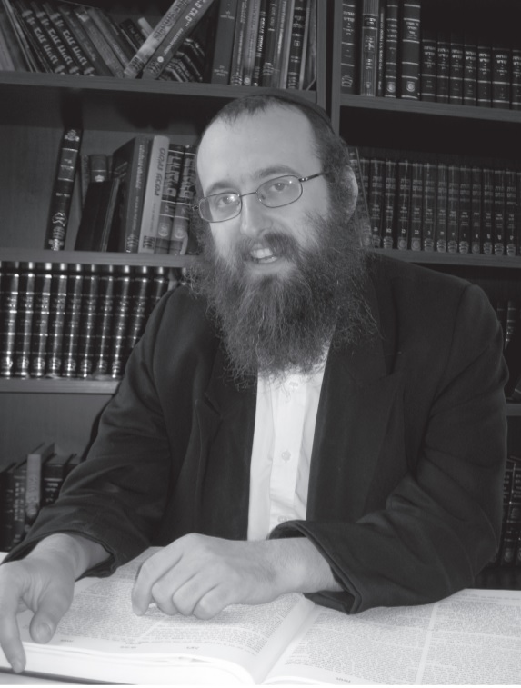

Anticipating the Ultimate Gimmel Tammuz Celebration
Gimmel Tammuz is a day that says so much to each one of us. At the same time, Gimmel Tammuz contains within it much more than it says. It is a day that contains so many messages about so many different things. Still, the bottom line is that Gimmel Tammuz contains an identical message for all of us. * It is a day that represents clarity, vision, mission, a goal. A day that reminds us of who we are. But it is also a day of confusion. * The Rebbe teaches us how to integrate these seeming opposites in a special sicha about Menashe and Efraim .

It seems there isn’t another day in the calendar where the contrasts are so stark, where the conflict between mind and heart are so prominent. On the one hand, we know that we are in Yemos HaMoshiach, and “the time for your redemption has arrived,” that Moshiach is already here, Moshiach b’hisgalus, and all we need to do is welcome him. On the other hand, “there isn’t a day whose curse is not worse…” And here we are again, Gimmel Tammuz, and what concealment there is!
Gimmel Tammuz represents the contrast between so-called reality and what is true reality, that which is tested against the perspective of Torah, the perspective of G-dliness, the perspective of Chassidus, the Rebbe’s perspective.
When a day like Gimmel Tammuz comes around, it reminds us of what the Gemara says, “Just as their faces are dissimilar, so too, their views are dissimilar.” There aren’t two people in the world who think exactly alike. It doesn’t exist. As it has been said, “Just as you wouldn’t try to change the face of another person to be like your face, don’t try to change his view to your view.” The same is true for Gimmel Tammuz, there aren’t two Chassidim with the same view.
IT DEPENDS ON HOW YOU LOOK AT IT
The Rebbe spoke many times about Gimmel Tammuz as the is’chalta d’Geula (starting point of redemption) and even said it was loftier than 12 Tammuz. However, the Rebbe Rayatz’s horaa for the Chag Ha’Geula was for 12 Tammuz, and it was he who established the “holiday of holidays,” the day of our redemption, and that we don’t say Tachanun on 12 Tammuz. Because of this, many years ago, a Chassid asked the Rebbe regarding Gimmel Tammuz, whether we should say Tachanun or not.
(Every year, in many minyanim, there are arguments about reciting Tachanun on Gimmel Tammuz. It’s like the person who spent Shavuos in a certain community and witnessed arguments about whether the custom is to stand or sit when the Ten Commandments are read. He saw an older man there and asked him what the custom was in that place. The man said: This is the custom, to argue about it …)
The Rebbe told this Chassid who asked about Gimmel Tammuz (and 18 Elul), “In matters that depend on one’s feelings, you don’t ask, because by asking it shows there are no feelings.”
Perhaps the same is true about Gimmel Tammuz in general, in recent years, that these are things that depend on one’s feelings and to each his own.
In a sicha of Shabbos Parshas Eikev 5713, the Rebbe spoke about the Rebbe Rayatz and said an amazing thing: It depends on you! How you relate to 10 Shvat 5710 (when the Rebbe Rayatz passed away) depends on you. If you want to treat the Rebbe as being in the seventh heaven, you will see the Rebbe as he is there. But whoever sees the Rebbe as being down below, “we will not let go of him,” will see him down here.
If this was said about a Rebbe of the sixth generation, all the more so for the seventh generation, after all the explicit things we heard from the Rebbe about eternal life. It depends on how we view things. The Rebbe says Moshiach is coming. How should we regard this? This is something that depends on us.
TO BE NOSTALGIC OVER THE PAST OR TO LIVE THE FUTURE?
It is hard to speak. It is hard in general because it is impossible to convey emotions with words. It is very hard to speak on Gimmel Tammuz altogether, and even harder to talk about and demand and do what the Rebbe wants in the way he wants it. But it is harder to remain silent.
There was a great man called Yosef HaTzaddik. He was a devoted follower of his Rebbe, Yaakov Avinu. He learned by him and was mekushar to him. Then one day, there was obscurity and concealment and Yosef was taken down to Egypt. Unprecedented concealment. No maamarim, no sichos, no kos shel bracha, not even email and faxes.
Chazal say that whatever Yaakov received from Shem and Eiver, he gave over to Yosef. Yosef was his father’s closest disciple but he was in Egypt and he was stuck there for many years.
When Yosef’s wife gave birth to two sons in Egypt, he called the first Menashe and the second one Efraim. What do these names mean? Menashe is from the root meaning to forget, “G-d made me forget my father’s house.” I have already forgotten what it means to be connected to my father’s house due to the great concealment. Menashe represents the nostalgia and yearning for the beautiful past which no longer exists.
Efraim is from the root meaning fertile, “G-d made me fruitful in the land of my suffering.” Here I am in Egypt and G-d made me fruitful. Here in exile there is a revelation of G-dliness and an advantage of light over darkness, and here I can see the Rebbe as I could in Canaan. Efraim represents looking at the present reality with the Rebbe’s glasses, with Yaakov’s perspective, seeing the advantage of light as it comes from darkness.
When Yaakov Avinu gave the blessings to his two grandsons, he crossed his hands and placed his right hand on the younger brother, Ephraim’s, head. What did Yosef do? He took the Rebbe’s hand and said, “Not like that, my father.” What is this interaction supposed to mean to us?
The Rebbe explains in Likkutei Sichos that the Torah is teaching us here that there is the conduct of Yosef and the conduct of Yaakov. To put it in our terms, there is how a Rebbe relates to something, and how a Chassid relates.
From Yosef’s perspective, the first thing is Menashe. When in a state of darkness, the likes of which hasn’t been since the creation of the world, a galus within a galus, the first thing is, “G-d made me forget my father’s house,” the awareness within the concealment that “we will not let go of him,” “our desire is to see our king.” We focus on memories of the Rebbe and think about our connection to the Rebbe, and do not accept the situation.
Only afterward, as a step two, do we have Efraim. There is the knowledge that there is a divine plan and it is the true plan, and that the Rebbe is looking at us and for the Rebbe it is good, and the Rebbe wants us to do our avoda to perfection, “Hashem made me fruitful in the land of my affliction.”
For Yosef, on the part of the heart, the emotions, there is a clear inclination to live with Menashe, with yearning for previous years. It is only afterward that it is possible to speak and think about things like Efraim. You first have to recognize the terrible situation for what it is, and only then can you say that it’s a stage on the way to Geula.
Yaakov, on the other hand, sees the ultimate intent directly. On Yaakov’s part, the main thing is Efraim, Efraim is the older one. Efraim is the revelation of G-dliness, the ultimate good, the revelation of light within the darkness.
The Torah teaches us to combine these two approaches. As Chassidim, we live with Menashe but we must equally live with the Efraim perspective.
TO REMEMBER A LOOK OF THE REBBE
Tonight (4 Tammuz) is the first yahrtzait of the shliach here, Rabbi Yitzchok Dovid Groner a”h [R’ Braun was a rav and shliach in Sydney, Australia at the time of this farbrengen – Ed.]. R’ Groner said that the Rebbe told him in 5712 that everyone who saw the Rebbe, has to – every morning, it doesn’t matter whether before the morning blessings or afterward – go to a corner and think about the Rebbe. By a Chassid, a day does not go by without “made me forget my father’s home,” without thinking about the Rebbe, without recalling the Rebbe’s gaze, without thinking that the Rebbe is looking lovingly at him.
The Rebbe Rayatz explains in Likkutei Dibburim that “and he returned many from sin,” refers to the Rebbe. When the Rebbe looks at a Jew, he lifts him up to great heights, but each of us has a good part and a not-good part, a healthy part and an unhealthy part. When the Rebbe looks at us at a farbrengen, he lifts up our good part above our not-good part.
The Rebbe Rayatz goes on to explain the saying, “Yisroel, even if he sins, is a Yisroel.” That within every Jew there is a point of truth, a bit of Rebbe, and that part is always in a state of perfection in every Jew. No concealment can conceal that part of a Jew. There can be something lacking in a certain limb or another, but the spark of Rebbe within you, always remains whole.
When the Rebbe looks at a Chassid, something that we cannot see today, he changes his essence. The Rebbe is an extension of the source of all life and as such he infuses others with life, and when the Rebbe gazes at us he lifts us to new heights.
There was someone in my community who had a health problem. He asked someone who was going to pass by the Rebbe on Sunday to ask the Rebbe for a bracha for him. There is a significant time difference between New York and Sydney and so it happened that this man received a phone call from his friend at two in the morning. He was woken up and his friend said, “The Rebbe said you need to check the pushkas in your house, including the pushka in the stairwell and make sure they are full. And use your full Jewish name.”
The man was shocked. He was in Sydney, Australia and it was two in the morning. “How did the Rebbe know what is going on in my house? How did the Rebbe know that I don’t use my Jewish name? When I write to him, I sign like a Chassid and use my Jewish name! And how does he know I have a pushka on the stairwell? And especially when we did renovations lately and that pushka was pushed into a corner and is empty. The Rebbe said to make sure the pushkas are full, especially the one on the stairs!”
When a Chassid gets a phone call like that, for him it’s a cold shower, “The Rebbe is looking at me and at everything I do.”
One of my relatives came to Crown Heights and wanted to see the Rebbe. This was a day when the Rebbe went to the Ohel. I told him that he can’t see the Rebbe privately but then I remembered that the Rebbe went to the mikva on Union Street first, and told him that when the Rebbe came out of the mikva he could speak to him. I stood with him on Union Street and we waited to see the Rebbe.
Obviously, I had no intention of showing my face to the Rebbe and the minute I heard the door start to open, I disappeared. I walked back a few houses from there and hid in the bushes. My relative stood there, focused on the Rebbe, and did not notice that I was gone.
He asked the Rebbe for a bracha and then wanted to say something about me. He turned around while pointing at where I had been standing thirty seconds earlier, but I wasn’t there. The Rebbe looked a few houses down, in the direction of the bushes, and motioned with his finger that I should come. What choice did I have? When the Rebbe calls for you, you go. The Rebbe gave me a nickel and said what he said.
When your day begins with a look from the Rebbe, it’s a completely different sort of day.
I was in the Rebbe’s house after 22 Shvat. I stood near the Rebbe and saw how the Rebbe had a paper on his siddur. I stood behind the Rebbe and tried to see what was written on the paper. When I merely began approaching, the Rebbe took the paper and turned it over. You stand behind the Rebbe and the Rebbe sees what’s happening!
At every farbrengen, when we raised our cups of mashke, we would wait for the Rebbe to respond. The Rebbe did not notice you time and again. The Rebbe would go down the row you were in and ignore you. Then, you made a good hachlata, to add in the Rebbe’s shlichus, in some inyan of the Rebbe, one of the Rebbe’s mivtzaim, and the Rebbe looked at you. Nearly everyone can attest to this.
There needs to be the “G-d made me forget.” Unfortunately, we are deep in the darkness of galus. We are in a time that Moshiach is nigleh v’chozer v’nichseh (“is revealed and is concealed again”) which is the numerical equivalent of Gimmel Tammuz. We need to remember and remind ourselves that the Rebbe is with us, chai v’kayam.
CRUSHED AND EXPANSIVE
A Jew by the name of David Klinghoffer, not a Lubavitcher, had a blog. He wrote (years ago) that he remembered Gimmel Tammuz 5754. He was on vacation with a friend and in the middle of the night, that Motzaei Shabbos, “We were both sticking our heads out of a skylight to catch the sound of the surf and the smell of the wind. Very strangely, we both suddenly had a feeling of being ‘spooked.’ Did you ever have an experience like that? It was a strong intuition of loss that we mutually confirmed before we knew anything about what might have called it up.” Returning to Manhattan on Monday morning, they heard the news.
The Magen Avrohom writes that some fast on the Friday of the week of Parshas Chukas, because on this day dozens of wagons full of (handwritten) s’farim were burned in France. The Magen Avrohom asks why the fast was established on a particular day of the week and not, as is common, on the day of the month when this occurred. He says, “Because through a dream-question they found out that it was the connection of the day to the parsha that caused the decree, as in the Targum on Zos Chukas HaTorah is ‘this is the g’zeira (decree) of (upon) the Torah’.” That means that the decree was connected specifically with Parshas Chukas and not with the calendar date.
On Motzaei Shabbos Parshas Korach, Sunday of Parshas Chukas 5754, began a situation of “the decree of the Torah,” as the Targum there says. On the one hand, it is indeed a “decree upon the Torah,” a situation of “crushing” as the Rebbe explains in the maamer. On the other hand, materially, boruch Hashem, there is plenty of gashmius, more than ever. Spiritually, new s’farim have been printed, shluchim are working, and there are more shluchim than ever before. But at the same time, there is a situation of “crushing” that has no parallel. The plaint of the Jews exists more than ever, that we are still stuck in the darkness of galus.
The Midrash says regarding the period of concealment of Moshiach, “Whoever believes him, eats burning coals and bitter roots.” Back then, about 2000 years ago, Chazal described our situation today – there will be a situation in which you will eat ridiculous things, and they will relate to you as if you are crazy. Yes, certainly the Rebbe is chai v’kayam and he will be revealed in full force, but where? Who? What? Why? How? When?
The following story illustrates what an abnormal situation we are in (if anybody needs such illustrations). A Chassid came here with his young son. The boy said to his father, “I want to see the Rebbe.” That’s a legitimate request, “our desire is to see our king!” And the rule is that nothing stands before the will.
His father said that when Moshiach comes very soon we will see the Rebbe. Later, when they saw a video of the Rebbe, the boy asked his father, “Is this when Moshiach came?”
We need the true and complete Geula. Gimmel Tammuz is the day that we are fully aware of Menashe, and it is specifically because the Rebbe is chai v’kayam that there needs to be a far greater cry, how can we be in this situation in which we can’t see it?
On the other hand, we know that despite the concealment, the Rebbe is here, the Rebbe is chai v’kayam, and he is about to take us out of galus.
THE FOUR PERIODS
On Gimmel Tammuz 5701/1941, the Rebbe Rayatz said a sicha, that 14 years had already passed since Gimmel Tammuz 5787/1927, we completed the era of “yad ha’gedola” (the great hand – yad numerically equivalent to 14) and now the period of “yad ha’chazaka” (the strong hand) has begun.
On 10 Shvat 5724, 14 years after the histalkus in 5710, the Rebbe repeated the point. The Rebbe said that 14 years had passed since 10 Shvat, 14 years of the “yad ha’gedola,” and now we are entering an era of “yad ha’chazaka.” The Rebbe spoke then in terms of the nesius of the Rebbe Rayatz, but we as Chassidim extrapolate from it regarding the Rebbe’s nesius.
In Chassidus it explains that there are three categories of yad-hand: yad ha’gedola, yad ha’chazaka, and yad ha’rama (the upraised hand). In fact, in the nesius of the Rebbe we see three distinct periods; from 5710-5724 – yad ha’gedola, from 5724-5738 – yad ha’chazaka, from 5738-5752 – yad ha’rama. In retrospect, we know that the culmination of each 14-year period was associated with a health-related event. We don’t know much about the event of 5724, but the events of 5738 and 5752 are well-known.
In the first period, yad ha’gedola, the attribute of chesed/kindness, the Rebbe is like a father and shows his love to the T’mimim and Anash. In the second period, yad ha’chazaka, the Rebbe begins to send shluchim to every place in the world. And in the third period, yad ha’rama, the Rebbe is revealed in a way of being raised up, so that in every corner of the world people know and are aware of the Rebbe.
A certain wise person pointed out to me that in a few places in Chassidus it mentions a fourth level, “zeroa netuya” (outstretched arm). This explains the verse, “and the four hands shall be for you, and the fifth for Pharaoh.” After going through the four periods corresponding to the four hands, we reach the ultimate level of “the fifth for Pharaoh.”
We say in the prayers of Yom Kippur, “You give a hand to the rebellious ones and Your right arm is extended to receive penitents.” There is the “yad” of the Rebbe in its three incarnations up to 5752, and from 5752 and on it is the zeroa netuya, “your right arm is extended.” The arm is extended to the lowest of the low. The arm is with us and gives us special strength and fortitude to traverse the concealment and obfuscation in such a horrific situation, and the Rebbe lifts us up to the highest of the high. The arm in the human body is higher than the hand, and now we see the outstretched arm of the Rebbe more than ever before.
What does Gimmel Tammuz 5754 say to us? The Rebbe is with us just as before. Whoever heard of such a thing in Jewish history? That Chassidim should continue to gather together to celebrate 28 Sivan, the day of the Rebbe being saved, and organize a thanksgiving meal for Rosh Chodesh Kislev in honor of the Rebbe, as if nothing happened? From where do we have the strength for such things? It is clear that it is coming to us from the outstretched arm of the Rebbe!
However, these four hands “shall be for you,” but that is not what we want. That is still galus. What comes next is “the fifth for Pharaoh,” with the intent being Pharaoh of holiness. Moshiach takes the hand of each and every person and pulls him into a state of Geula.
Gimmel Tammuz is the day that we need to strengthen our focus on “the fifth for Pharaoh.” The Rebbe wants the True and Complete Redemption, and nothing less will suffice.
Today, Gimmel Tammuz, we need to strengthen the matter of “the fifth for Pharaoh.” We do not want the four hands. We want the revelation of the Rebbe in such a way that it won’t be me or you who are saying shlita, but The New York Times writing shlita and the whole world saying shlita.
“All of your days – to include (bring to) the days of Moshiach.” This is our entire life, this is our entire existence. The very essence of our lives and existence is the Rebbe, Moshiach, which are one and the same. We want the Rebbe to reveal the fifth hand, and today on the “holiday of redemption,” we want to hear a talk from the Rebbe that will demonstrate to the whole world that this is a holiday of redemption, a redemption that never was before, that we should already see the Rebbe come and redeem us!
Yechi Adoneinu Moreinu V’Rabbeinu Melech HaMoshiach L’olam Va’ed!
Beis Moshiach (staff). "Anticipating the Ultimate Gimmel Tammuz Celebration." Beis Moshiach, no. 1073 (June 20, 2017).